Alfreds favorite aircrafts from WW2
 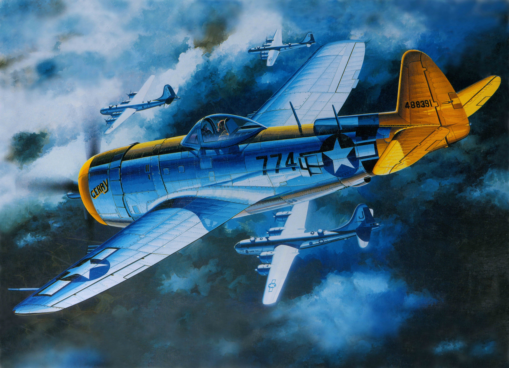
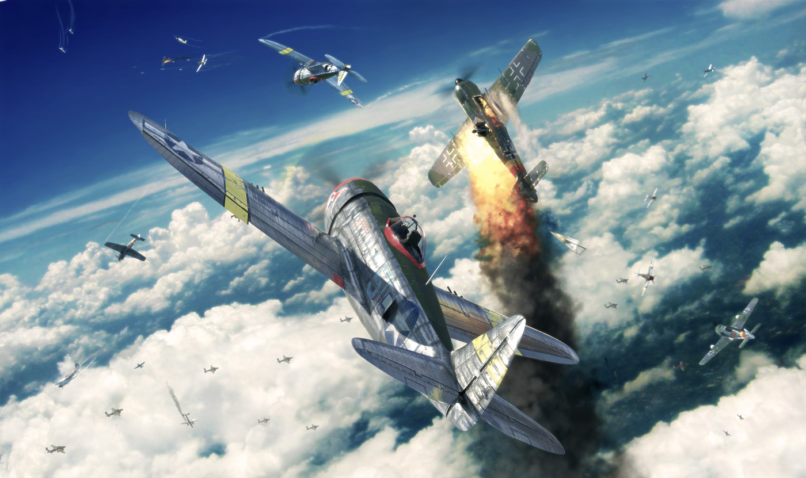
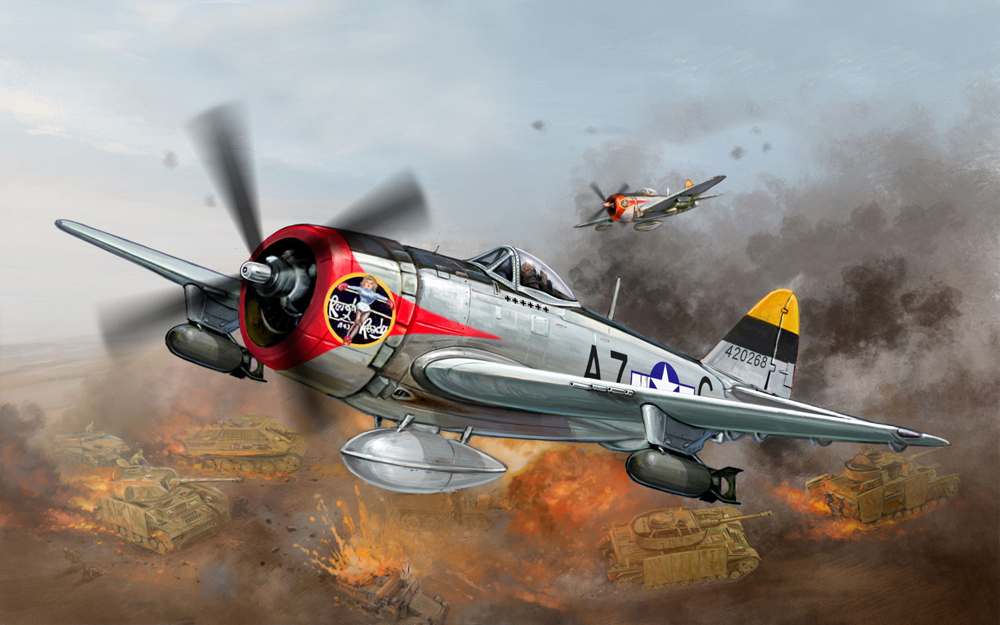
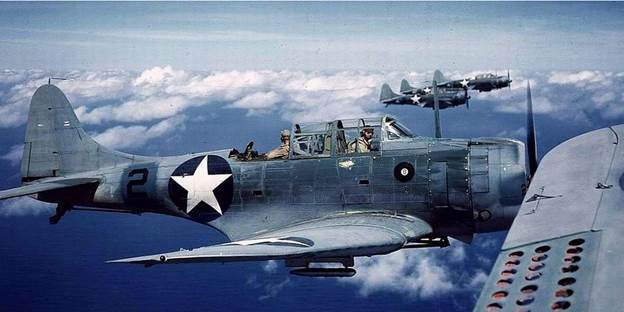
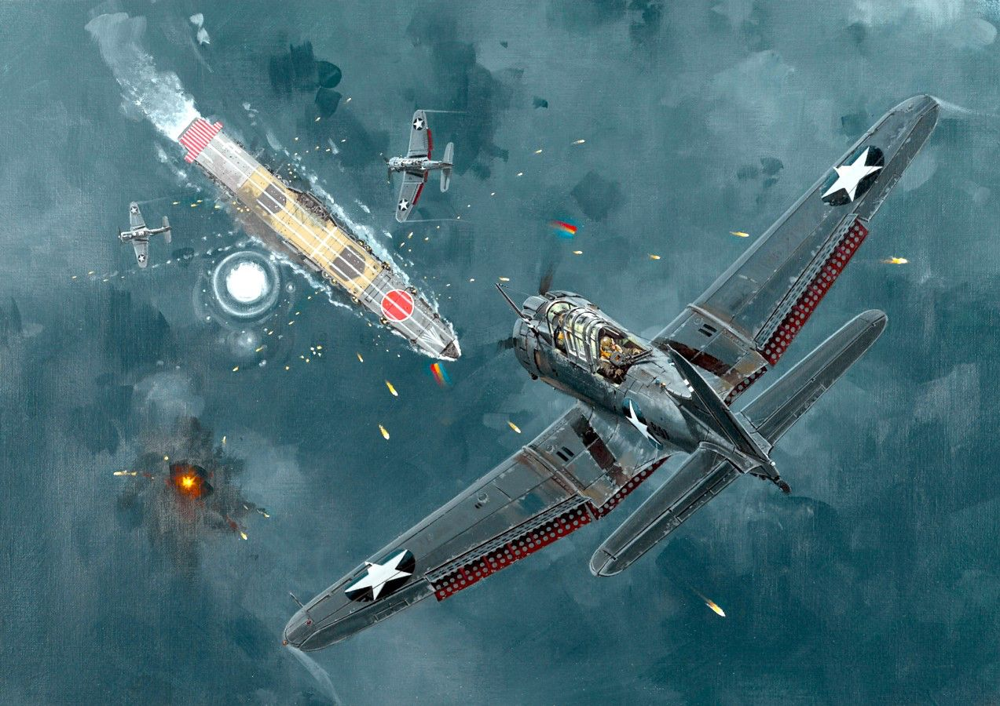
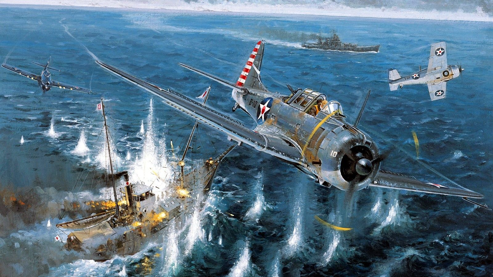
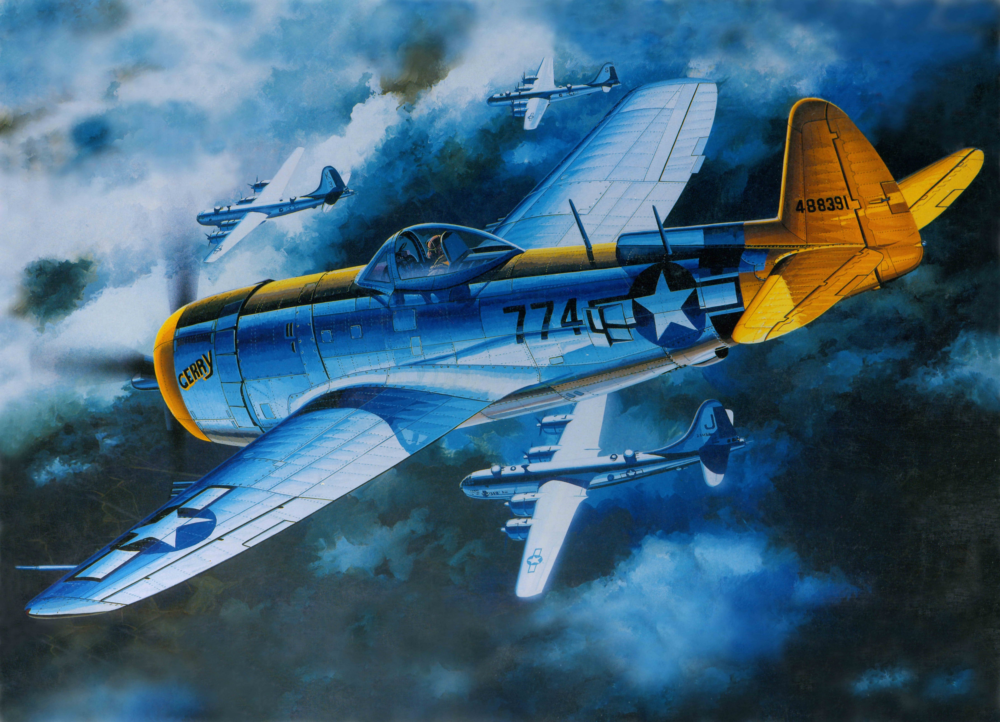
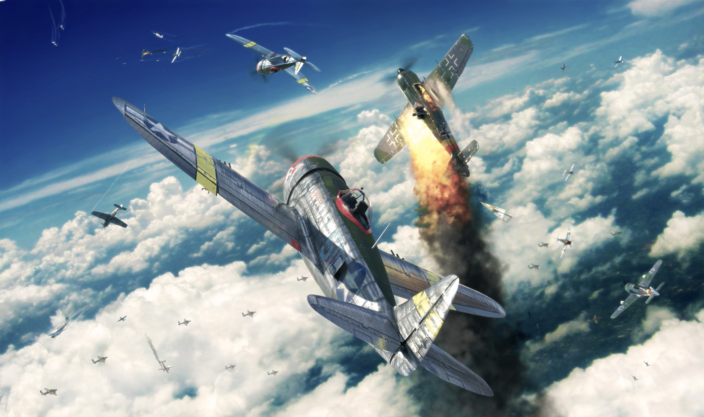
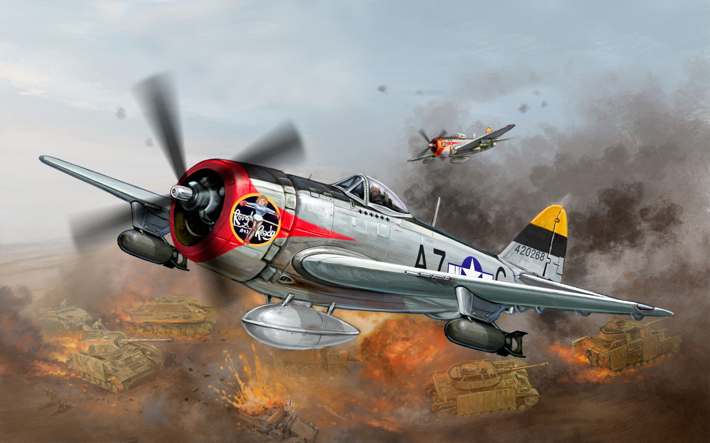
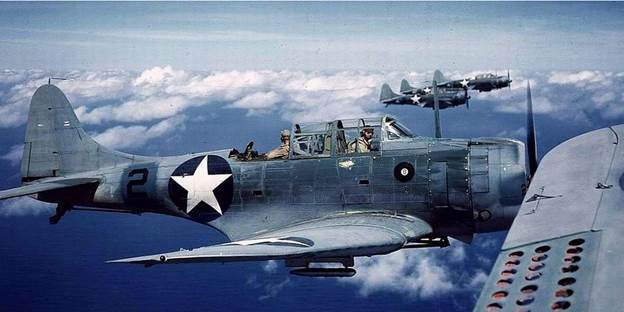
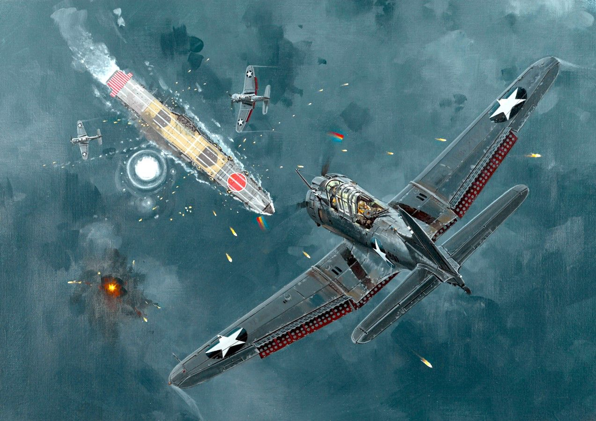
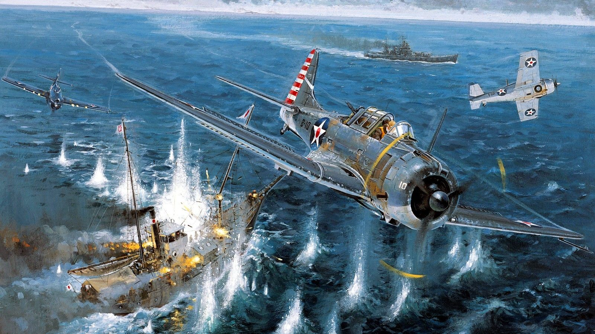
B-25 Mitchell medium bomber
The B-25 Was a medium bomber that served in the American airforce during the second world war. The B-25 mainly served in the pacific war between the US and Japan. It was first made famous during the Doolittle raid were 16 B-25 bombers led by Lieutenant Colonel Jimmy Doolittle successfully attacked mainland Japan. It was a much-needed victory for the Americans after the bombing of Pearl Harbour. the bombers took off from the aircraft carrier USS Hornet on April 18th, 1942. Only 1 of the bombers managed to land intact while the rest crashed in the ocean. out of the 80 aircrews, 69 of them survived and managed to make it back to America one way or another. The B-25 was capable of carrying a payload of 2400 lb (1,100 kg) of bombs over 1,200 mi (1,900 km).
I fell in love with the design of the B-25 almost instantly and it has a very fascinating story which I wished more people would know. The story of army bombers lifting off an aircraft carrier and managing to be the first in the world to bomb mainland Japan is just so great. It feels like fiction and that is what makes me interested in historic wars and what happened.